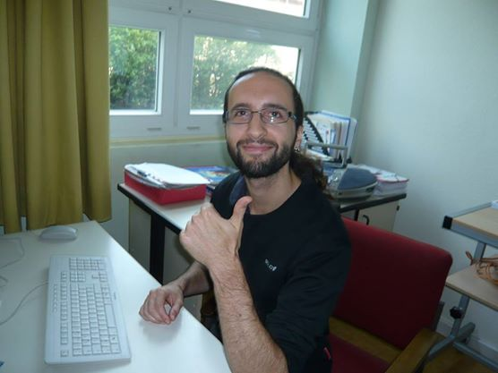
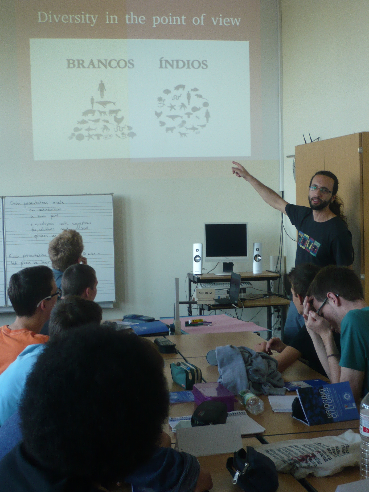
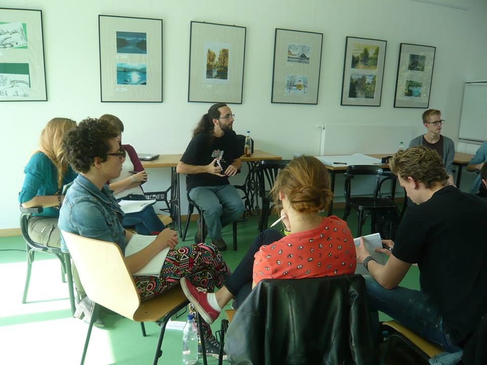

Bridging Cultures 2014 aus der Sicht des lateinamerikanischen Trainers, Bruno M. Chies
05. November 2014
The year is 2014 and the teenagers have already heard a lot about Brazil, certainly more than previous years, since it was there that Germany played and defeated (to put it mildly) Brazil, winning the World Cup. And that is how I start my main presentation, with a picture of an inconsolable Davi Luiz, the midfield defender of the Brazilian Seleção, featuring the cheerful German Nationalmannschaft in the background. In the eyes of many, the thing that best represents my nation has always been football, so this very first association is brought up, followed by the question that is supposed to challenge the young student´s knowledge about Brazil: apart from football, what do you know about it? Surely they know more about Brazil. Maybe the media in Germany covered some common stories about Brazil, the life in the favelas and criminality, the carnival, the beautiful beaches and very diverse landscapes, samba, or the astonishing progress that Brazil made in lifting millions out of poverty in the recent decade. Indeed, many of the students heard about things like the big gap between the rich and the poor, or the big demonstrations that shook the streets of Brazilian cities June last year.
But this time around they had a native Brazilian in front of them telling all these other stories about Brazil, things that the great majority never heard about. In fact, when asked about if they knew that there were still indigenous people in Brazil, usually only about 5% (and not more than 10%) of the audience would raise their hands. As part of my presentation I needed to introduce this, what would be of my main topics of our two-day workshop – indigenous people do exist in Brazil! – and the visual appeal and powerful message of a
video about uncontacted tribes living in the border of Brazil and Peru, for instance, enticed the students´ curiosity and helped them come a bit closer to such a foreign world.
But the task I set myself was more ambitious than just showing how indigenous peoples in Brazil, contacted and uncontacted, were constantly struggling for their lands, their survival and way of life. I also wanted to show my students how exactly they, as young men and women living in Europe, are to some extent connected and even dependent upon indigenous peoples in Brazil. Not an easy task, I know, since this is not obvious and common knowledge. Even the average grown-up Brazilian usually has no clue whatsoever about the native people, let alone teenagers growing up in Berlin. It is a huge ground to cover and gets it more and more complex the more you study all the social, economic, political and ecological dynamics. But our generation (I can also include myself in their generation, after all I am not that older!) has grown accustomed to hear often about particular topics such as climate change, the importance of the rainforest, food production, consumption habits and global trade. Therefore, presenting the main threats to indigenous peoples implied the challenge of connecting these dots.

Let´s take an important point presented and discussed in the workshop. The expansion of agribusiness in Brazil, actively pursued by the Brazilian government as one of the main policies for rural development and insertion in the global market, provides the background for the dispute of land and the conflicts we find today in Brazilian society regarding indigenous rights. Due to some perverse logic in a global market of commodities, it is not unlikely that the food (meat in particular) that people eat here in Germany implies unaccounted costs of deforestation and land-grabbing for indigenous and traditional populations in Brazil. Soybean as fodder to livestock is one of the main products imported from Brazil , and its production requires vast areas. To my surprise, many students from different schools were already familiar with the relationship between this kind of big monoculture, export-oriented, and its devastating effects on the rainforest and soil degradation. The impacts on indigenous peoples however remained largely unknown up to that point. On the other hand, as I tried to show the students, a globalized world is not only about having access to cheap manufactured or primary goods from all corners of the world, which could eventually come at the cost of the livelihood of native people and deforestation. Not only indigenous peoples are dependent on us, to not destroy their lands and means of livelihood, but we are also dependent on them, as our biggest allies in preserving the rainforest and combating climate change. In Brazil, this point can be easily shown with satellite images. Indigenous territories are a green oasis in areas were the agribusiness, cattle ranching, mining and logging activities have cleared the native forest. This phenomenon is not only restricted to Brazil, but persistent around the world and still remains largely unrecognized.
Fortunately, the response by the students has been very positive, and judging from their own presentations at the end of the workshop I can happily say that the message has been conveyed and that students are much more aware about how they are somehow connected to indigenous peoples, and how we can actually learn something from them, particularly in terms of sustainability. Moreover, we have succeeded in presenting the general framework of the Bridging Cultures Project, whereby the staff representing different countries and continents are discussing issues of globalisation and development that concerns us all. As I like to put it, the idea is to avoid a travel agency-like representation of a country and its people: “Look how beautiful, exotic and distant my country is!”. Or maybe one would also exchange the adjectives “beautiful” and “exotic” for “poor”, “underdeveloped” or “primitive”, which will nonetheless provoke the feeling of distance and unconnectedness, perhaps reinforcing an old-fashioned sense of Western and European superiority. The objective of our project has been to bridge cultures, in the sense of creating connections that are necessary in order to learn from each other and finally to build a common world that can embrace and respect human diversity. Bridging cultures is also about questioning values, being critical of our developmental paradigms and finally finding a way to live in a common world, which seems to shrink more and more, connecting us all by both visible and invisible threads. Exposing this ever-growing interdependence among people from all corners of the world and also reminding us of our inexorable connection with the natural world should be some of the most important aims of a global education project for the 21st century. In this sense, the Bridging Cultures Project has been an important model for promoting this kind of education and its concept was to me a source of inspiration.